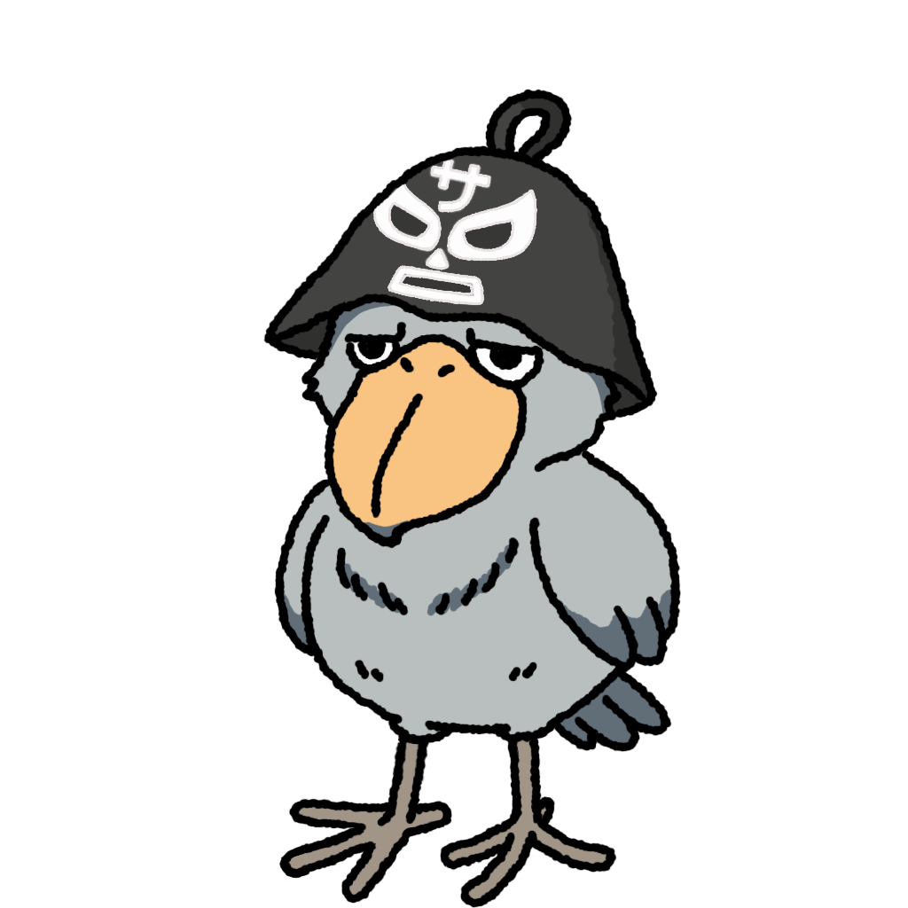

Kinopy's Second
ver.1.0
⚡ 内蔵モード
🔊
⚙️

🎯
Kumapyを読み込み中...
🎯
Kumapy連携を読み込み中...
↻
0/0
▲
▼
🔄
下に引っ張って更新
✨ Gemini 思考中...
🔊 発話中...
🎙️ 音声聞き取り中...
⏱️ 15:00
📝
💡
🍪
🛌
🎤
📋
🔊
⚙️ 設定
✕
Gemini API 連動
(OFF時は内蔵モード)
Gemini API Key
📊 本日の消費:
0 tokens
📈 累計消費:
0 tokens
Kumapy WebApp URL
● 確認中…
合言葉はこの端末（開く場所）にだけ保存されます。URL には載せません。タスクの表示には使いません（表示は下の同期経由）。「Kumapy を開く」と接続確認に使います。
☁️ クラウド同期 (GAS Web App)
● 確認中…
合言葉はこの端末（開く場所）にだけ保存されます。保存すると通るかを確かめます。未入力の間は同期せず、発言・メモは「未送信」として端末に残ります。Kumapy のタスク表示・天気・睡眠もこの合言葉で取ります。
音声読み上げ
外部の音声合成を使う（api.tts.quest）
オンにすると、ローカルの VOICEVOX が無いとき、読み上げる文の先頭（日記・タスク由来の内容を含む）を外部のサービスへ送ります。オフなら端末の音声で読みます。
🎤 メイン音声（キャラクター声）
🔊 試聴
玄野武宏・通常（落ち着いた親友・執事声）
玄野武宏・喜び（明るい親友声）
白上虎太郎（元気な親友・少年声）
雀松朱司（気さくな男友達・青年声）
栗田まろん（爽やか・優しい友達声）
剣崎雌雄（知的で落ち着いた相棒声）
青山龍星（低音・頼れるイケボ）
麒ヶ島宗麟（渋くて頼もしい兄貴声）
春日部つむぎ（明るく元気な親友声）
四国めたん（丁寧・お嬢様執事声）
ずんだもん（ポップ・マスコット声）
雨晴はう（優しく癒やし系ボイス）
macOS/iOS: Otoya (日本語・男性)
macOS/iOS: Kyoko (日本語・女性)
macOS/iOS: Siri (日本語)
OS標準 自動選択
メイン高さ:
1.0
メイン速度:
1.0
💻 予備・オフライン音声
(API失敗時)
🔊 試聴
macOS/iOS: Otoya (日本語・男性)
macOS/iOS: Kyoko (日本語・女性)
macOS/iOS: Siri (日本語)
OS標準 自動選択
予備高さ:
1.0
予備速度:
1.0
📖 発音・読み替え辞書
(1行に「単語:読み」)
※ 音声読み上げ時のみ指定した読みに置き換えます（画面表示は変わりません）。
予定の時間ぴったりリマインド
毎正時の時報アナウンス
深夜の夜更かしストッパー
キャラクターの定期的な独り言
日次前提データ（天気・睡眠・朝刊）
🔄 日次コンテキストを最新化
設定を保存
📝 メモ管理
✕
📌 保管中のメモ (
0
)
📦 アーカイブ済み (
0
)
▶